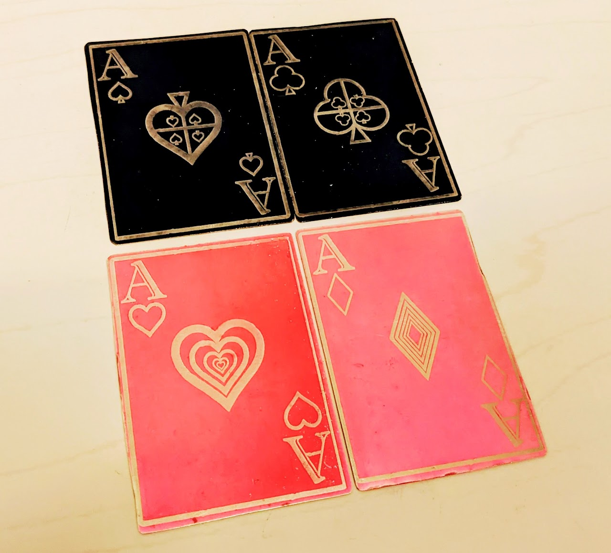

← Back to all tools
Lasers
Laser cutting equipment and materials are labeled red.
Access & Orientation
Laser cutter access is separate from general BTU access and requires a dedicated orientation. The orientation schedule is posted on the BTU Lab Calendar.
For class assignments, students should first seek help from their class LAs, TAs, or instructors, then from BTU's student laser mentors, known as "Lazor Wizards," if further assistance is needed.
Book a laser orientation

Equipment & Materials
Laser Cutters
- 75 Watt CO2 Laser — 30" x 18" bed (762mm x 457mm)
- 75 Watt CO2 Laser — 40" x 28" bed (1016mm x 711mm)
Compatible Materials
- Various plywood
- Various plastics
- Various cardboard and papers
- Various fabrics
Gaining Full Independent Access
- Complete the laser cutter orientation (see the BTU Lab Calendar for the schedule).
- For class assignments, get assistance from LAs, TAs, or instructors first, then from a Lazor Wizard if needed.
- Schedule appointments with a Lazor Wizard for guided practice — they'll help as much or as little as you need.
- Once you demonstrate safe, independent use of the laser cutter, you'll be granted full access.
- After that, block your own one-hour time slots on the whiteboard next to each laser (outside scheduled orientations).
Getting Help
Ask about BTU's student laser mentors, the "Lazor Wizards," during your orientation, or reach the lab directly at atlasbtulab@gmail.com.
← Back to all tools